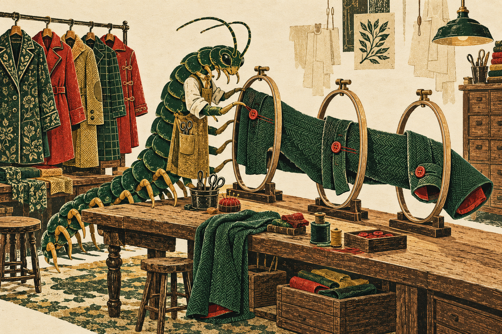
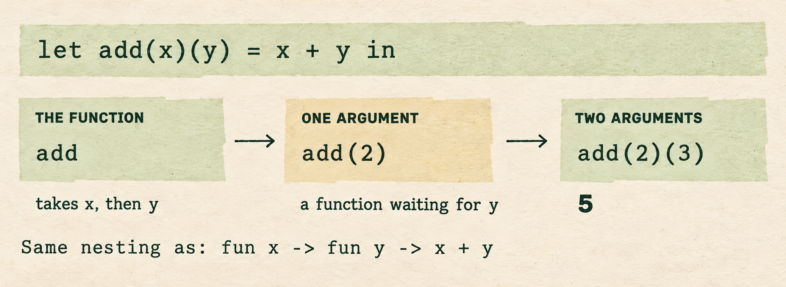
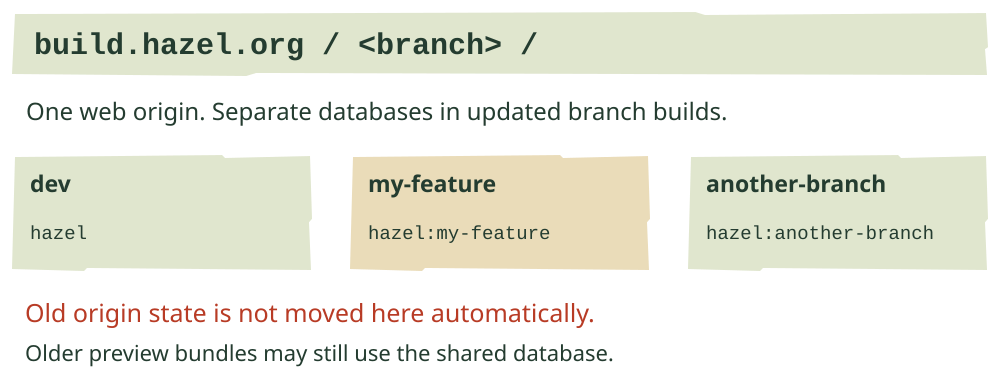
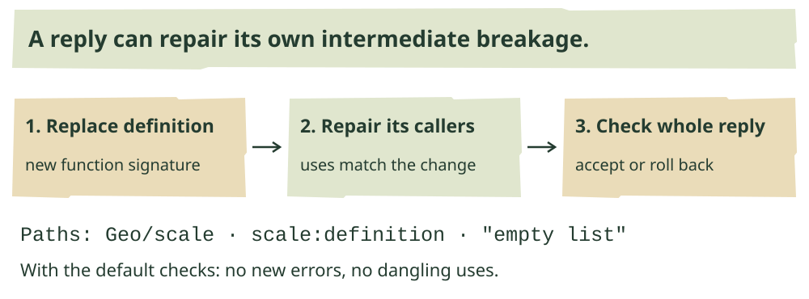
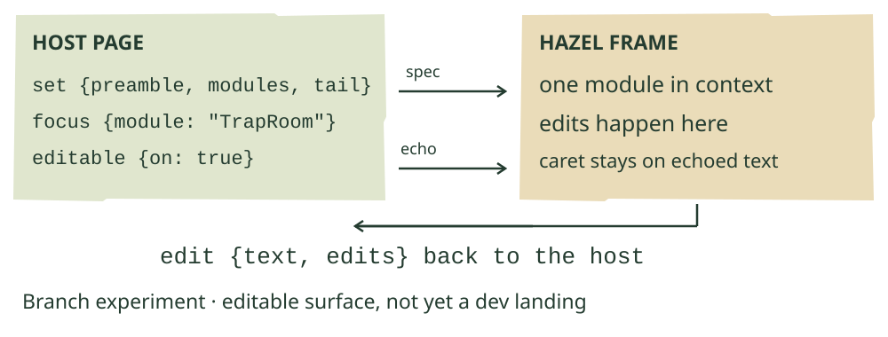
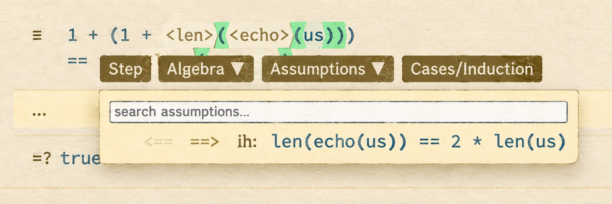
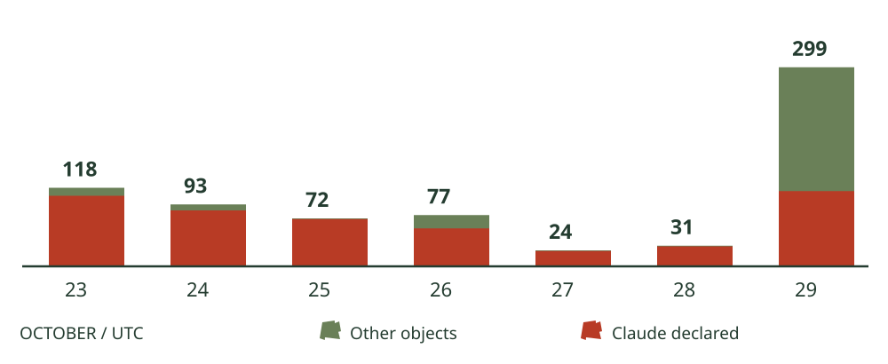

One argument at a time.
Curried definitions reach dev in a week of 24 landings. Branch previews move, recursive types stretch further, and the agent learns to edit through the outline.
In this issue
- Functions, one group at a time.
- Which branch, which browser state?
- Checks that can keep up.
- A stream can describe its own tail.
- The agent edits the same structure.
- The embedded editor can send edits back.
- A newline, a pair of parentheses, a key.
- Keep the menu—and your place.
- A busy Thursday, and open questions.
- The brackets stay.
Merged into dev / October 29
Functions, one group at a time.



Source-derived example of the new shorthand. The first application returns a function; the second produces 5. Styled and exact renditions show the same example.
Twenty-four PRs reached dev this week. Among them is a compact new way to write a familiar kind of program: let add(x)(y) = x + y. Each argument group introduces another function layer. Supply x now, keep the resulting function, and supply y later. #2403 brings the shorthand into the shared editor; it does not introduce a different evaluator for curried functions.
MaxCarroll0 wrote the original implementation in July. Cyrus Omar brought it through the current editor this week, following the argument groups through Auto Probe, Step Into and Explain This. The evaluator tests include let f(x)(y) = x + y in let g = f(1) in g(10), with expected result 11. Other cases cover three groups, recursion, tuple patterns and empty groups. Tests
The integration found a less visible problem: a function named g could also have a parameter named g. When that function was exported from a module, a name lookup could pick the parameter’s type as the whole function’s type. The export now reads the complete binder. This matters even when the concise spelling makes the definition look uncomplicated. Integration account
Another July contribution landed alongside it. CAIMEOX’s #2391, reviewed and integrated by Cyrus, lets pattern matching recognize a constructor hidden behind parentheses or a fold projector. A folded Yo in a pattern can match Yo(5) and bind its payload, instead of leaving the match stuck. Coverage checking regains the constructor identity too. Folded constructor applications on the expression side remain a separate limitation.
Merged into dev / previews and persistence
Which branch, which browser state?


Source-derived storage map for builds containing #2759. No automatic migration of saved documents between web origins is implied.
Branch previews now deploy to build.hazel.org/<branch>/. Cyrus Omar’s #2747 replaces commits into the old build repository with uploads to an R2 bucket. That removes the site-wide Pages rebuild from each preview’s path. Review also changed the upload order: assets first, then the entry page, then stale-file removal and cache purging. These are still unversioned filenames, so the change should not be read as a promise of atomic deployment.
The address change has an immediate consequence for testers. Browser state saved under hazel.org is not automatically visible under the new origin. Within build.hazel.org, updated branch builds now use separate IndexedDB databases: hazel:<branch>, while dev retains hazel. Cyrus’s #2759 prevents two experimental branches from overwriting each other’s persisted structures. It does not migrate schemas within a branch, and older preview bundles can still use the shared database. The color-theme cache remains shared.
The top bar now helps identify the specimen: branch, short commit, dirty/ahead suffixes when applicable, and an optional PR link. #2315 began with Alexander Bandukwala’s implementation, continued with Cyrus Desai’s development, and reached its compact top-bar form through Cyrus Omar’s completion. The branch and commit link separately to GitHub; the label is selectable for copying.
For a bug report, that copied label is more useful than “the preview.” Long-lived branches also need the new deployment workflow from dev before their next pushes can publish through it. A successful old build and a fresh preview at the new address are different facts.
Merged guardrails / a streaming draft
Checks that can keep up.
Several proposals from recent issues became shared infrastructure. Andrew Blinn’s #2714 shortened the quick suite; Matthew Hammer’s #2700 checks incremental evaluation against evaluation from scratch, and his #2678 makes excess deterministic work fail CI. These checks answer different questions: whether reuse preserves the answer, and whether a program now takes more evaluator work than its budget allows. Neither alone measures browser responsiveness.
Alexander Bandukwala’s #2721 adds coverage from manual browser sessions. Cyrus Omar added a comparison against the base commit so the report can distinguish changed lines; Alexander then repaired missing instrumentation of the main and worker entry points. Coverage can now say more about the code a tester actually touched, though an executed line is still not an assertion that its behavior was right.
Cyrus also separated formatting and warning checks from the quick suite (#2748) and added a validated cached-toolchain fast path (#2758). #2744 establishes the code-owner review policy for dev. The next proposal, #2756, is an advisory performance report per PR. Its timing scenarios complement the work budgets: a memoization improvement can save time without changing an evaluator step count.
Streaming: fewer intermediate messages. Matt Keenan’s draft #2762 replaces Andrew’s earlier #2662 proposal with a fixed interval: stream updates at most every 500 ms, judging probe pins and sample focus only when evaluation is complete. A partial rerun has not necessarily reached the pinned call yet; that absence should not erase the pin.
In Matt Keenan’s four-round Chromium comparison, the Growth Plotter edit with Auto Probe off settled at a median 19.5 seconds on dev and 1.6 seconds on the draft. Those are reported measurements on that workload, not a general speedup. The simpler scheme has a trade-off: in a multi-cell batch, a quick cell followed by a slow one may wait for the batch result to appear. Scratch sends one item per batch. The PR reports tests for focus and worker behavior, but no test specifically for the throttle.
Draft types / one Modules II landing
A stream can describe its own tail.
Alexander Bandukwala’s six-part recursive-type stack makes a useful example possible: Stream = () -> (Int, Stream). Calling a stream gives a number and another stream. Its new reference program reads successive tails of count(10) to obtain 10 and 11. A recursive product can likewise expose the known prefix of an unfinished chain: (1, (2, ?)) can be checked against Chain = (Int, Chain).
The proposed comparison can also recognize two spellings of the same repeating structure. A second stream type places two number-and-tail stages before referring to itself. It still describes the same stream, so the checker accepts the corresponding annotation. Comparing an integer stream with a Boolean stream still fails. This changes consistency checking and the operation that combines compatible types; it does not replace every general equality helper.
The stack also revised its treatment of a self-only cycle. type Loop = Loop receives a warning at the binder, and a concrete integer does not acquire that type. An October 27 change replaced the earlier plan to treat the cycle as unknown. These are linked drafts, not dev behavior. Reference examples
A signature keeps its meaning. Alexander’s #2735 did merge, into modules-ii/1-sig-types. If a signature says type T = Int; let x : T, a body cannot change T to Bool and thereby make x = true satisfy the signature. Member expectations are resolved before checking the body. The implementation now reports both mismatches. Deeply nested modules remain a cost to revisit: Alexander’s synthetic 64-level Node measurement rose from 6.38 to 30.80 ms; that is fresh statics, not browser typing latency.
Separately, Matthew Hammer’s open #2729 lets a sum declared in a shared module supply unqualified constructors to later code. His stacked tests in #2749 expose an integration boundary: an existing type-shadowing bug can accept an old constructor and then get stuck. Alexander’s lexical-renaming draft #2732 addresses the underlying scope distinction, but the combined repair has not landed. Qualified constructors such as Common.ToRoom are not what #2729 adds.
Open PR #2469 / modular-editors
The agent edits the same structure.


Source-derived reply transaction. Checks apply to the completed set of edits, allowing callers and a changed definition to be repaired together.
The modular-editor branch has a new center of gravity this week: its outline and agent tools share a structural editing kernel. Andrew Blinn’s work gives the agent a small set of operations—insert, replace, delete, move and rename—addressed by paths such as Geo/scale or scale:definition. The paths refer to entries and their parts, so changing an earlier line need not invalidate a later target. Branch work
Renaming is deliberately distinct from replacing text. The rename operation can select a function parameter and update its bound uses; a replacement is refused if an outside use would silently switch to another binder. Moving an entry preserves its code and probes and converts separators when it crosses between a module and a function body. It does not quietly rewrite uses that the move leaves out of scope. Rename checks
Several calls in one reply run in order and are judged together. An agent can change a function’s signature and repair its callers within the same reply. If a call fails, or the finished edit fails the enabled checks, the editor rolls back the reply’s edits. The no-new-errors and dangling-use checks start enabled and can be switched for experiments; this is a concrete editing policy, not a claim that generated code is correct.
The human can inspect the interaction more closely too. “View as agent” now includes a read-only rendering of the map actually sent in a request, while Trajectory groups the recorded context, response, calls and results by turn and round. This helps distinguish what the agent received from what the editor shows now. The work remains on the open modular-editors PR, with its Modules II and operator-hole dependencies. Recorded view
Branch experiment / embed-editable
The embedded editor can send edits back.


Source-derived message flow, not a browser capture. The host’s echoed specification preserves the current edit when the module text matches.
Last week’s embedding work could put Hazel’s tiles into another page. Matthew Hammer’s embed-editable branch now lets that page request an editable module, receive changed text, and refresh the program around it. The frame can show just TrapRoom while checking it in the context of Common and the other modules. This is fresh branch work beyond the read-only frame in #2719, not a dev landing. Branch revision
The handoff is specific. The host sends the program specification, focuses a module and enables editing. An edit produces an edit message back to the host. The host updates its specification and echoes it to the frame; when that text matches the edited body, the frame preserves the editor and caret while refreshing statics. The surrounding application remains responsible for deciding when to run the program.
Navigation now crosses the same boundary. A definition request for another cell can tell the host which name to reveal; the destination frame reports where its caret landed. The host controls line numbers, font and theme; the frame reports a height that accommodates its context menu. These details matter when Hazel is one panel among several rather than the whole application.
The deployment succeeded, but the branch’s Fast and Full checks stopped at a compile failure in a test harness missing the new message variants. The behavioral suite therefore did not validate this head. Separately, Matthew’s lib-closures branch repairs captured values in functions returned through JavaScript, including functions returned by a later call. That fix is not yet an ancestor of the editable-frame branch. Closure repair
Small landings / two open contributions
A newline, a pair of parentheses, a key.
Andrew Blinn’s #2706 fixes a paste boundary with a surprisingly durable effect. Paste let a = 1 in followed by a newline immediately before x: trimming that newline could produce let a = 1 inx. Reloading then reads inx as a different identifier. The merged fix parses the clipboard as supplied and retains linebreaks at both edges.
Anton Dziatkovskii’s open #2722 catches another disappearing boundary. Firing the trigger in ^^probe(1 + 2) * 3 used to remove the grouping parentheses and leave 1 + 2 * 3. That changes the program, not just its decoration. The patch retains parentheses around targets rooted in an operator, and carries the rule through typing, loading, pasting and printing.
There is a visible consequence: a probe on x + 1 can leave (x + 1) behind when removed. The trigger fires as its closing parenthesis is typed, before later context exists, so the proposal makes the grouping decision from the target itself. Its author explicitly identifies the patch as model-written with human accountability. It remains open; the comic’s crab has reached a firmer decision than the merge queue.
Next usage, still waiting. john-yang-11 replaced last week’s draft with the smaller #2731. It keeps Shift+F12 and the existing document-order search, dropping the extra command-palette and menu work. Alexander Bandukwala’s review welcomed the reduction, then found the shortcut still did nothing in the preview: an earlier handler intercepted Shift plus function keys for the debug console, which has no F12 action. The week produced a clearer proposal and a specific dispatch bug, not an available shortcut. Blocking review
Tutorial answers now checked. Alexander’s #2647 landed solution fixtures for every tutorial lesson with tests and corrected three lesson texts. These are inputs for checking the lessons, not a new reveal-answer button. Matthew Hammer’s approval suggested a complementary check: the initial lesson should fail at least one test, so an exercise cannot begin already solved.
Landed repairs / new editor proposals
Keep the menu—and your place.



Nishant Kheterpal’s original September PR image for #2487, whose fix landed this week. The stamp is illustrative; the authentic PNG is retained alongside it. It does not show the later hexagon repair.
Nishant Kheterpal’s #2487 began by raising proof controls that later rows could cover. It reached dev this week with Cyrus Omar’s follow-ups: raise nested rows without turning the whole proof into an overlay over page menus, and move the hexagonal editor’s shape onto a decorative background so it no longer clips its context menu. The PR image illustrates why the first repair matters: the induction hypothesis is reachable.
Matthew Hammer’s #2672 also landed with a more precise policy than “stop scrolling.” When a font is measured, a caret that was already visible is revealed again; one the reader deliberately scrolled away from stays away. Alexander Bandukwala’s review had identified the other case: a restored caret can look visible with placeholder metrics and disappear when the real font arrives. The conditional repair preserves both intentions.
Views inside views. Cyrus’s new open #2766 addresses projectors that recognize wrapped data when reading but not when writing. The color picker can decompose a parenthesized color and rebuild its wrappers after an edit. A channel slider survives a same-kind color change; changing between Rgb and Oklch removes channel wrappers because their byte and floating-point channels differ. The PR also repairs a folded row making a list stop looking like a table.
His open #2764 distinguishes deliberate settings edits from hover and automatic activity so incidental events do not consume undo steps or clear redo. It still calls out the larger snapshot question: undoing an edit can revert a panel opened afterwards. And draft #2763 moves context menus into the browser’s top layer to address remaining coverage and dismissal problems. Those proposals are next steps, separate from the fixes already on dev.
October 23–29 UTC / repository census
A busy Thursday, and open questions.


SHA-distinct reachable objects by committer date. Red declares a Claude co-author; green has no such trailer. Together they give the labeled total. Exact vector geometry in both editions.
Daily counts as a table
| Date | All | Declared Claude co-author |
|---|---|---|
| 2026-10-23 | 118 | 106 |
| 2026-10-24 | 93 | 84 |
| 2026-10-25 | 72 | 71 |
| 2026-10-26 | 77 | 57 |
| 2026-10-27 | 24 | 23 |
| 2026-10-28 | 31 | 30 |
| 2026-10-29 | 299 | 113 |
The week brought 37 new PRs, 25 merges and 14 new issues. Of the merges, 24 went into dev and one into the Modules II feature branch. Three issues closed. The outstanding issue stock was 363 at retrieval on October 30; that is a current stock, not a reconstruction of Thursday midnight.
Across the 877 remote branches captured, 714 distinct reachable commit objects have committer timestamps in the reporting week: 473 non-merge objects and 241 merges. Fifty-two captured branch tips date within the week. Rebases and cherry-picks can produce different objects for related work; this is neither a count of pushes nor a productivity score.
Of those objects, 484 declare a Claude co-author, including 432 of the non-merge objects. None declare an OpenAI/Codex co-author. Separately, 220 contain a cryptographic signature field; signatures were not validated. The categories overlap. Missing trailers leave assistance unknown, and neither figure measures the share of code written by agents.
New issue reports explain some of the next testing work. Matt Keenan’s #2753 shows a proof_of type changing when its quoted expression’s binder steps away; #2754 asks how a bare let … in expression should parse inside a module. Alexander’s #2742 shows an unannotated tuple member losing its inferred type when its sibling mismatches. These are reported boundaries, with exclusions or proposed repairs, not three completed fixes.
Fictional comic / things to watch
The brackets stay.

Fictional comic inspired by #2722. The cover’s centipede tailor handles the function’s argument groups one at a time; neither illustration depicts a contributor.
The crab, the acrobats and their employment arrangements are fictional. The parentheses are doing real work: this week’s probe-trigger proposal preserves grouping after the probe is removed. A tiny piece of punctuation has declined to be scenery.
Next time, watch whether the recursive-type drafts and lexical-renaming work meet without losing their distinct scope rules; whether the editable frame gets its test harness green; and whether the new performance report makes memoization experiments easier to compare. The shared editor has absorbed a large batch of work. The feature branches still contain several different futures.
AI editor: Astra. Reporting: three agents covering language, infrastructure and editor behavior. Cover and comic are generated illustrations; technical plates retain source links and exact alternatives. Reporting closes at October 30, 00:00 UTC.